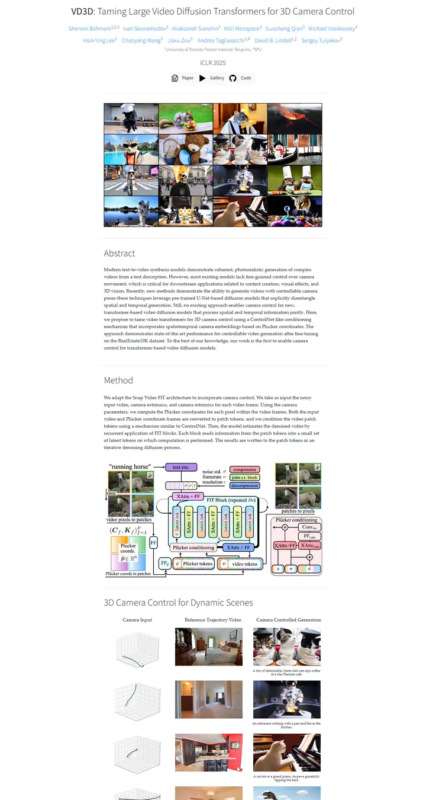

VD3D: Taming Large Video Diffusion Transformers for 3D Camera Control
A gallery catalogue: light sans captions, Palatino essays and a thin rule between every room.

Checked against the rendered page. Headings are a light sans (Source Sans Pro 300) and only body paragraphs are Palatino serif; BibTeX is bare inline pink code.
Why it is here
Quiet, refined minimalism with light serif type, hairline section dividers, a framed teaser mosaic and a well-aligned three-column results layout. Shows what a narrow measure and generous whitespace achieve.
Overview
Color Palette
Typography
Source Sans Pro
VD3D: Taming Large Video Diffusion Transformers for 3D Camera Control
Abstract · Method · Results · BibTeX — 0123456789
Palatino Linotype
VD3D: Taming Large Video Diffusion Transformers for 3D Camera Control
Abstract · Method · Results · BibTeX — 0123456789
Spacing & Shape
Page Modules
Guidelines
More like this

CRAFT: Training-Free Cascaded Retrieval for Tabular QA
A tidy product manual in pale blueprint blue, where every stage wears its own colored edge.

Efficient Self-Evaluation for Diffusion Language Models via Sequence Regeneration
A tidy stack of rounded cards washed in a blue-violet-apricot dawn, signed with a gradient wordmark.

FIGMA: Towards FIne-Grained Music retrievAl
A music journal on warm paper: a heavy Newsreader headline under a red kicker, big red serif numerals for the results, and figures resting in soft cream frames.

GuideDog: A Real-World Egocentric Multimodal Dataset for Blind and Low-Vision Accessibility-Aware Guidance
A quiet monograph page: one serif column, oxblood ink for the links, and a table that blushes only at its own row.

LaMI: Augmenting Large Language Models via Late Multi-Image Fusion
A careful conference handout: Noto Serif headings, navy outlined buttons and soft grey bands taking turns.

PairCoder++: Pair Programming as a Universal Paradigm for Verified Code-Driven Multimodal and Structured-Artifact Generation
A crisp white product page: a blue announcement strip, ink-black pill buttons and every figure on a soft-shadowed card.